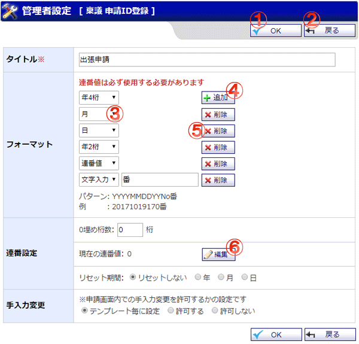

稟議を申請した際に、自動で割り振られる申請IDのフォーマット登録を行う画面です。

機能説明
OKボタン申請ID登録確認画面へ遷移します。 |
戻るボタン遷移元の画面へ遷移します。 |
フォーマットパターン申請IDとして使用する値の種類を選択します。 |
追加ボタン申請IDのフォーマットパターンを追加します。 |
削除ボタン該当するフォーマットパターンを削除します。 |
編集ボタン現在の連番値の編集を行います(10桁以内)。 |
表示・入力項目説明
タイトル
タイトルを入力します。（50文字以内）
フォーマット
申請IDを発行する際の形式を設定します。
フォーマットパターン：年4桁
現在の年(西暦)を使用します。
フォーマットパターン：月
現在の月を使用します。
フォーマットパターン：日
現在の日を使用します。
フォーマットパターン：年2桁
現在の年(西暦)の下2桁を使用します。
フォーマットパターン：連番値
現在の連番値に0埋めを行った数字を使用します。
フォーマットパターン：文字入力
任意の文字列を使用します(10文字以内)。
パターン
現在のフォーマットを表示します。表記方法は以下の通りです。
年4桁：YYYY
月：MM
日：DD
年2桁：YY
連番値：No
文字入力：入力した文字列
例
現在のフォーマットに従って発行される申請IDを表示します。
0埋め桁数
連番値の桁数が入力した桁数以下だった場合、先頭に0を挿入します。入力可能な桁数は1～10桁です。
現在の連番値
この申請IDに対して設定されている連番値です。
申請IDが自動発行される度に更新されます。
リセット期間
選択した期間単位で連番値のリセットを行います。
手入力変更
手入力変更を許可する場合、稟議申請時に手動で申請IDを入力することが可能です。